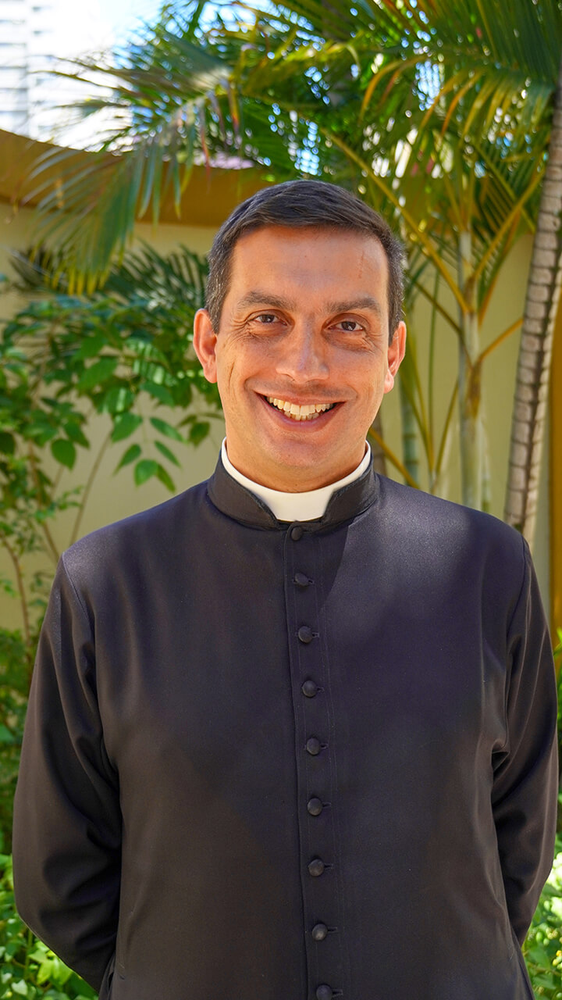
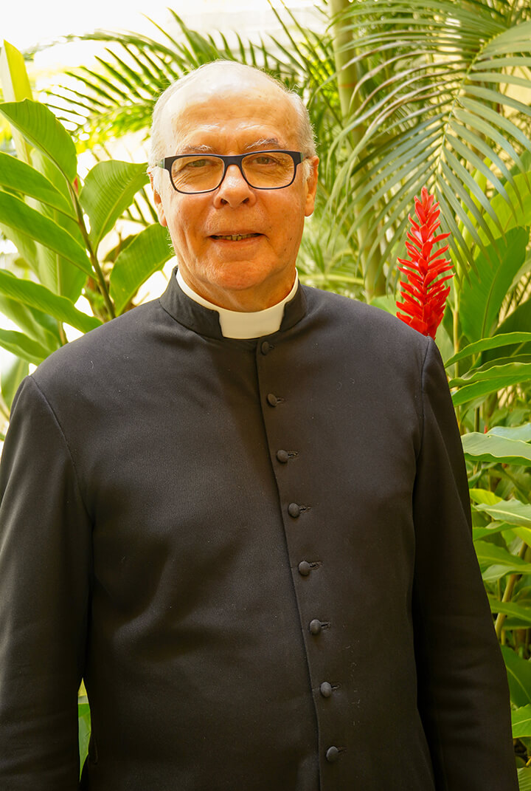

  
{{site.url}}

<section>
  <header class="main"></header>
  <div class="row">
    <div class="col-6 col-12-medium">
      <h1>Direção Espiritual</h1>
      <p>A direção espiritual consiste em uma conversa particular sobre a vida de oração e a relação com Deus, onde o sacerdote escuta e aconselha o seu dirigido. Ele também estará disponível para o atendimento de confissões, que podem ser realizadas ao final do encontro.</p>
        </br>
      <a href="https://centro-cultural-esplanada.reservio.com/booking/business/service?backlink=http%3A%2F%2Fesplanada.org.br%2Fdesp%2F&businessId=0c708e13-c23e-11e6-8b1c-525400ef745e" target="_blank" class="button primary icon solid fa-bookmark">Agende aqui</a>
        <h1></h1></br>
      <h3>Recomendações</h3>
      <ul class="alt">
        <li>✔️ O atendimento é destinado para homens.</li>
        <li>✔️ Olhe sua agenda antes de reservar. Faltar ou cancelar de última hora pode tirar a oportunidade de alguém.</li>
        <li>✔️ Para maior proveito, procure agendar com uma frequência específica.</li>
        <li>✔️ Dúvidas mande um e-mail para <a href="mailto:contato@esplanada.org.br" target="_blank">contato@esplanada.org.br</a></li>
      </ul>
      <h3>Atendimento de confissões</h3>
      <ul class="alt">
        <li>- Terças-feiras, das 19h às 19h30</li>
        <li>- Sextas-feiras, das 19h às 19h30</li>
        <li>- Sábados, das 18h15 às 18h45</li>
        <li>✔️ Não precisa marcar horário para confissão.</li>
      </ul>
    </div>

    <div class="col-6 col-12-medium">
      <h2>Padre Guilherme</h2>
      <div class="row">
        <div class="col-5 col-12-medium">
          <span class="image fit"></span></div>
          <div class="col-7 col-12-medium">
            <p>Pertence à Prelazia do Opus Dei desde 1988. Estudou e formou-se bacharel e licenciado em Física pela Unicamp. Doutorou-se em Direito Canônico pela Pontifícia Universidade da Santa Cruz em Roma, cidade onde também foi ordenado. Reside em São José dos Campos-SP e dá atendimento espiritual aos fiéis da prelazia e aos leigos e seminaristas da região.</br><b>Nascimento:</b> 21/07/1971</br><b>Ordenação:</b> 31/05/2003</p>
          </div>

      </div>
      <h2>Padre Cesário</h2>
      <div class="row">
        <div class="col-5 col-12-medium">
          <span class="image fit"></span></div>
        <div class="col-7 col-12-medium">												 
          <p>Pertence à Prelazia do Opus Dei desde 1969. Estudou e formou-se em Direito na Pontificia Universidade Católica de São Paulo. Doutorou-se em Teologia pela Universidade de Navarra na Espanha.
          Desde sua ordenação sacerdotal realiza trabalhos pastorais nos Centros de formação da Prelazia e seminários diocesanos.</br><b>Nascimento:</b> 23/07/1950</br><b>Ordenação:</b> 15/08/1979</p>
        </div>
      </div>
    </div>
  </div>
</section>

